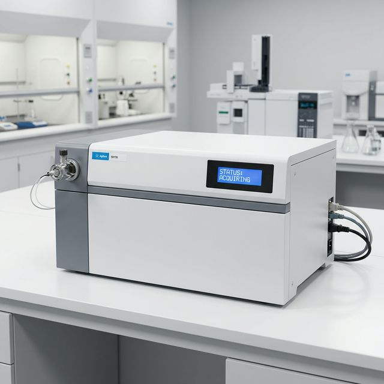

Initializing Mass Spectrometer...

Engage the turbo-molecular pump to achieve high vacuum in the analyzer region.
Heat the ion source to operating temperature and verify filament current.
Optimize lens voltages and calibrate mass axis using PFTBA (perfluorotributylamine).
All startup checks passed. The mass spectrometer is ready for acquisition.
70 eV electron beam. Extensive fragmentation. Standard library matching.
Soft ionization via charged droplets. Intact molecular ion [M+H]⁺.
Corona discharge ionization. Good for non-polar, thermally stable compounds.
Four parallel rods with RF/DC fields. Unit mass resolution.
3D trapping field. MSⁿ capability for structural elucidation.
Flight-tube separation by velocity. High resolution & mass accuracy.
For solid/liquid samples. Heated probe vaporization.
Coupled to gas chromatograph. Heated transfer line.
Coupled to HPLC. Electrospray or APCI interface.
Run a scan first to generate report
No faults. Clean spectrum.
m/z 28 (N₂), 32 (O₂), 18 (H₂O) peaks appear.
High chemical noise, reduced sensitivity.
EM dying — low sensitivity, missing low-abundance peaks.